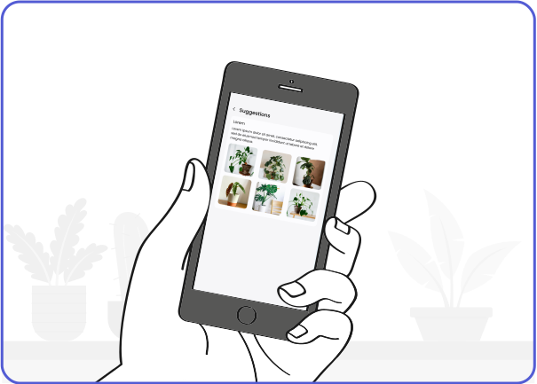

Timeline: 4 weeks
Role: Product Thinking, Strategy & Design
Deliverables: Functional Physical Prototype, High-Fidelity Prototype
Project Overview
Urbanization and indoor living spaces are often disconnected from nature, leading to a decrease in well-being. People often struggle with understanding the environmental needs of plants in their homes, which results in plant death and decreased mental health. Leaflink is a prototype device that helps users create an optimal indoor environment for plant growth by assessing light, humidity, temperature, and air quality levels. It offers users recommendations on the best plants for their specific conditions, ensuring healthier plant growth and enhancing well-being.
Problem Breakdown
We began by conducting a mix of literature review, observational research, interviews, and surveys to understand the problems and needs of people who care for houseplants. The research revealed key insights, such as:
34% Individuals who owned house plants expressed increased appreciation for tem, providing a sense of purpose.
43% Individuals who owned houseplants reported that caring for them enhanced their well-being.
50% Houseplant sales in the UK went up by 50% by 2019.
£306.71Is what an average Britisher spends in a year on houseplants.
However,
37% People killed one of two houseplants in a year.
11.5% People killed around 6 houseplants in a year.
48% 25-39 year-olds worry about keeping houseplants alive.
Dying houseplants can have a negative impact on people's mental health. It is worse than having no plants at all.
So, What Went Wrong?
We looked deeper into the struggles of plant care and found recurring problems. People didn’t know why their plants failed. Was the light too dim? Was it too dry? Most decisions were based on guesswork, and the frustration of repeated failures made it worse.
Existing solutions offered fragmented approaches—a care app here, a light meter there—but none provided an integrated, actionable tool.
|
Leafsnap |
Planta |

Auto-Irrigation System |

Air Quality Monitor |

Click and Grow |
| Real time data |
✗ |
✔︎ |
✔︎ |
✔︎ |
✗ |
| Hardware Visualization |
✗ |
✗ |
✔︎ |
✔︎ |
✗ |
| Integration |
✗ |
✗ |
✔︎ |
✗ |
✗ |
| Data Variation |
✔︎ |
✗ |
✔︎ |
✔︎ |
✗ |
| Data Monitoring |
✔︎ |
✔︎ |
✗ |
✔︎ |
✗ |
| Suggestions |
✔︎ |
✔︎ |
✗ |
✗ |
✗ |
Competitive Analysis
Brainstorming
Various ideas were brainstormed to identify feasible ways of delivering our solution. We focused on:
▸ The user’s experience of both the product and interface.
▸ Scalability of the solution, considering both the hardware and software components.
Brainstorming ideas session
We aimed to build a unique, user-centered solution. We envisioned a compact, portable gadget paired with smart software. Our goals were to
▸ Accurately measure light, humidity, air quality, and temperrature.
▸ Provide plant suggestions based on data, not guesswork.
▸ Offer user-freiendly tips for better indoor environments.
User Persona
User Journey
Storyboard
The user purchases the prototype and scans the QR code to install the app
The user places the prototype by the window, ensuring optimal sunlight and air for the plant
 After a week, the user receives a notification on their device, indicating updates about their plant
After a week, the user receives a notification on their device, indicating updates about their plant
The user opens the app to explore detailed insights about their plant's growth and condition

Based on the data collected by the app, the user is provided with suggestions of plants suitable for their environment
The user decides to buy an original plant recommended by the app, ensuring a healthy addition to their collection
Wireframes
 Insights
Insights
Medium-Fidelity Prototype
High-Fidelity Prototype
Physical Prototype
Challenges, Contributions & Learning
One of a significant challenge in this project was hardware integration. Ensuring accurate, real-time data from sensors required iterative testing and calibration, which made it specifically challenging. Additionally, curating a comprehensive and validated database for plant recommendations proved to be a time-intensive process.
I led the visualization of the project, defined its scope and requirements, and developed feasible design plans. My role spanned from prototype design and laser cutting to creating wireframes and iterating on UI mockups, ensuring an intuitive, user-friendly product. Additionally, I coordinated with hardware and software teams to align technical functionality with aesthetic goals, managing the design process to deliver a cohesive and funtional prototype.
This project underscored the critical importance of user research in refining both the interface and recommendations. Additionally, I learned that balancing technical constraints with user needs requires a flexible, iterative design approach.